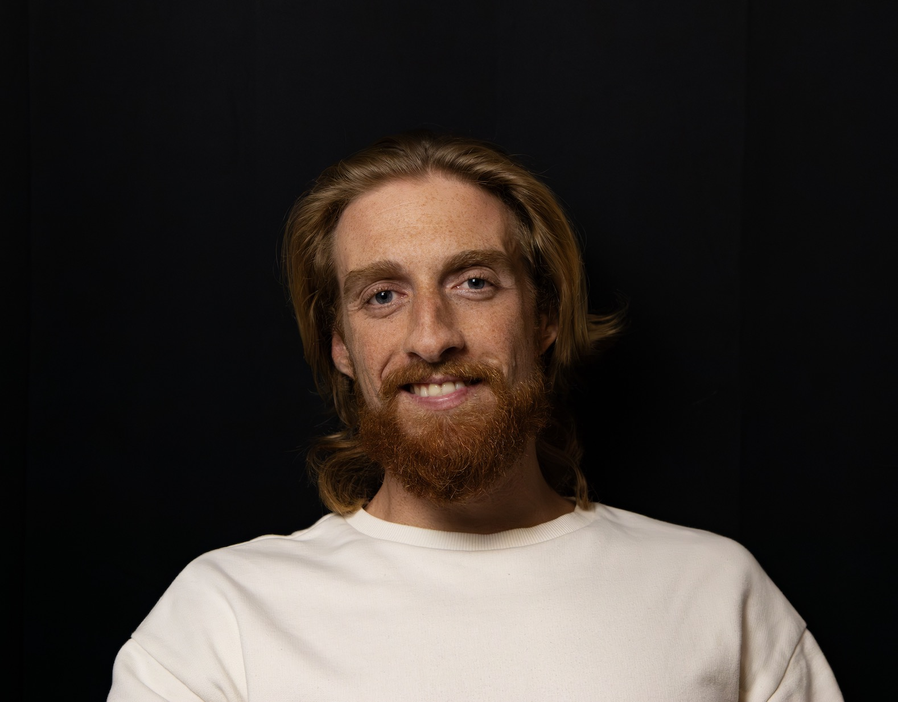
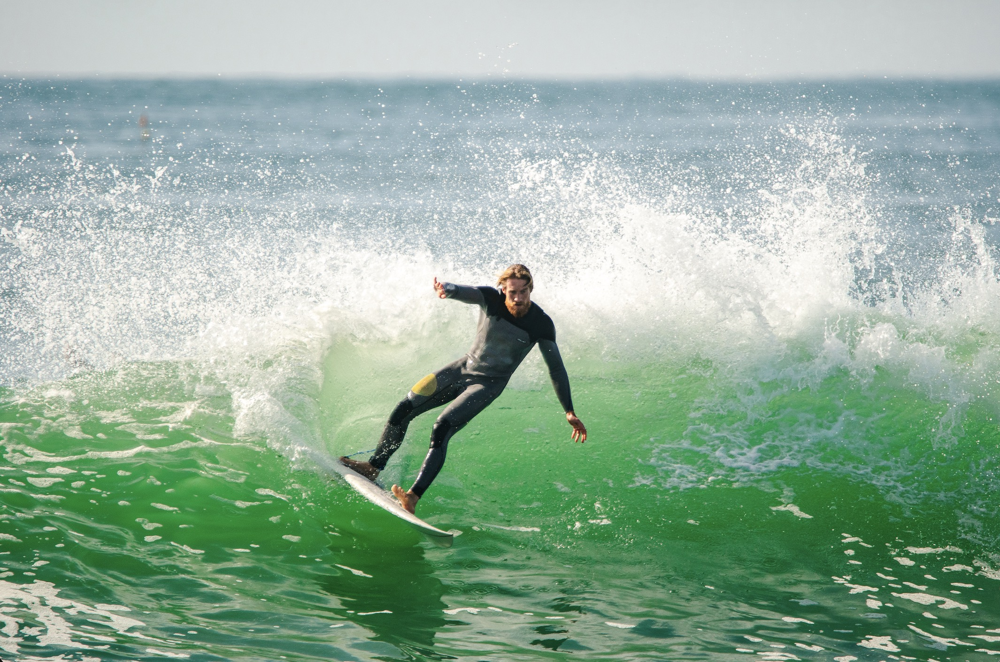

From managing Mediterranean shipping lanes to architecting AI systems — a story of radical reinvention, scientific rigor, and a relentless drive to build things that matter. Shot through with salt water, coffee, and light.


The beginning. Three years immersed in the practical realities of port and vessel operations — coordinating berths, managing cargo flows, and keeping maritime schedules tight. It was here that the fundamentals of organization and stakeholder management were forged, under real operational pressure.
Ten summers on the Atlantic. Prevented over 100 situations with drowning potential and performed more than 20 water rescues. Rapid, irreversible decisions under physical and mental stress became second nature — the kind of composure that no classroom manufactures.
Six years embedded in the operational heartbeat of one of the world's largest container carriers. Working 8h to 72h shifts across a 24/7 operation, I ensured container ship port stays were optimized — reducing turnaround costs by 10% through resourcefulness and last-minute problem-solving. Day-to-day responsibilities spanned crew changes, spare parts sourcing, bunker operations, and the full suite of logistic and crew support services, all around the clock.
The pivot — and the moment everything changed. Midway through, a subject called Data Science for Innovation and Impact redirected the compass entirely. I heard the call and spent five months learning programming, statistics, and data science from scratch — entirely self-taught, alongside the coursework. My thesis, "How to build a company with a scientific breakthrough", ran in parallel with this self-directed education, which culminated in earning a Data Science Associate certificate before graduation.
Life-sciences: Led a +2,000-product pharmaceutical forecasting initiative. Built an end-to-end Python pipeline (Oracle DB extraction, cleaning, iterative GBR+SARIMAX training) with batching and parallelization — generating six-month forecasts and achieving production-ready results for over 50% of products. A JSON-driven orchestration script automated two-day processing runs with robust error handling, automated fine-tuning per product, and hyperparameter registration for full reproducibility.
Banking: Reviewed legacy orchestration software reporting flows — from XMLs to database operations — and drafted a modernized Oracle DB approach. Designed, maintained, and modernized ETL flows using PL/SQL, refactoring stored procedures and optimizing complex queries. Collaborated with an international team on as-is assessments in preparation for full system modernization.
Public sector: Implemented an Azure API-based computer-vision and machine translation pipeline that automatically extracts textual content from policy documents and translates it in a domain-specific context — achieving a 98% success rate.
Automotive: Developed a price-forecast segmented regression model applied creatively to an internship-exam challenge — achieving 90% explained variance with marginal errors across all vehicle segments.
Curiosity-driven NLP research. Built an automated web-scraping pipeline in Python collecting ~13,000 Portuguese news items (36 articles/day over a full year). Engineered end-to-end NLP workflows — tokenization, lemmatization, vectorization, sentiment scoring, and topic modeling — storing results in a lightweight ChromaDB database. Compiled and delivered a comprehensive presentation tailored to both technical and non-technical stakeholders, mapping every insight directly back to the original research questions.
Acted as an external consultant and data scientist. Designed a customer-segmentation solution recommending and implementing K-prototypes clustering to surface 5 distinct actionable personas across the entire active customer base. Built an end-to-end Python pipeline (Jupyter / VS Code) to ingest, clean, and transform records — experimenting across multiple cluster configurations to validate results.
Self-taught practice in composition, light, and visual storytelling. Post-processing with Adobe Lightroom and Photoshop — the same eye for signal-in-noise that drives data work, applied to a frame.
Formal deep learning training at one of Portugal's top technical universities. Neural architectures, sequence modeling, and computer vision — the highest GPA of my academic career.
One day a week, intentionally analog. Serving at tables in a Porto specialty roastery — a deliberate counterweight to a week spent in data and abstraction. Coffee, people, presence.
Finance: Architected a multi-source RAG chatbot backend on Microsoft Azure, orchestrating MySQL databases and real-time web scraping with semantic search — achieving 40%+ higher accuracy than baseline models.
Marketing: Implemented client-specific business rules in Dataform/BigQuery pipelines — customizing data transformations per client, handling metric filtering and investment calculation logic. Diagnosed and resolved data quality issues across 40+ forms end-to-end: analyzing multi-table dependencies, identifying grain mismatches, and applying corrective SQL logic to ensure accurate data integrity.